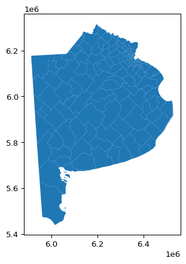
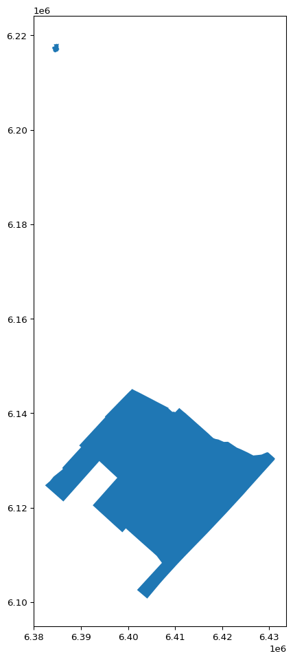
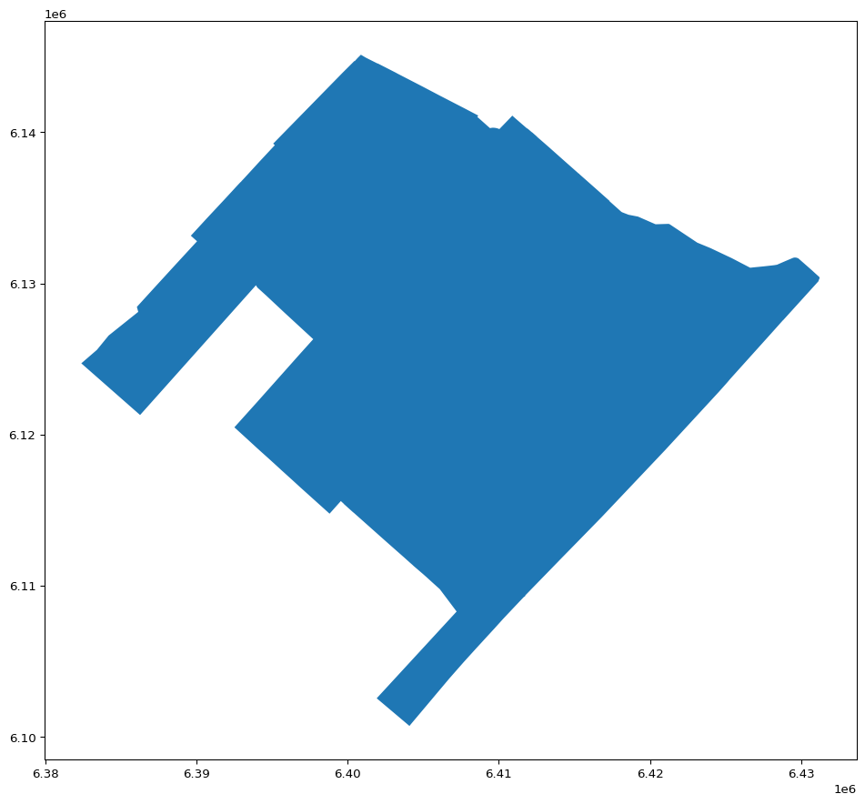
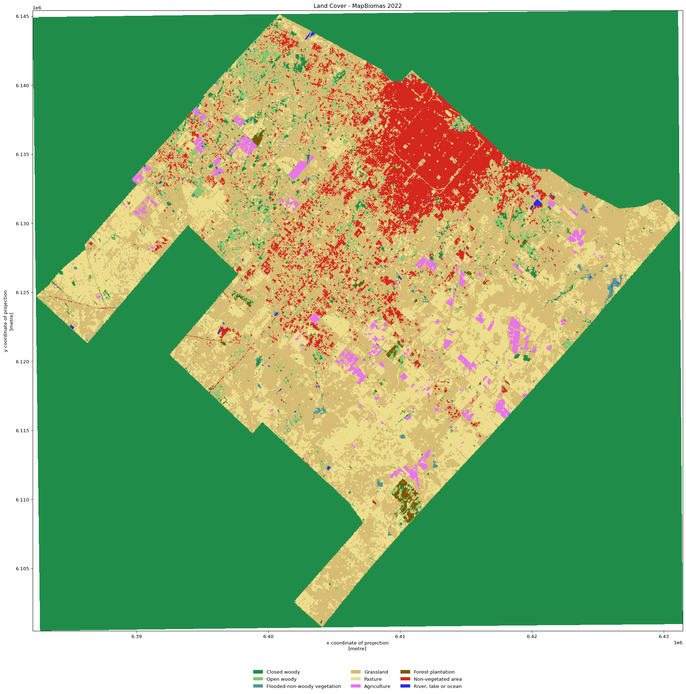
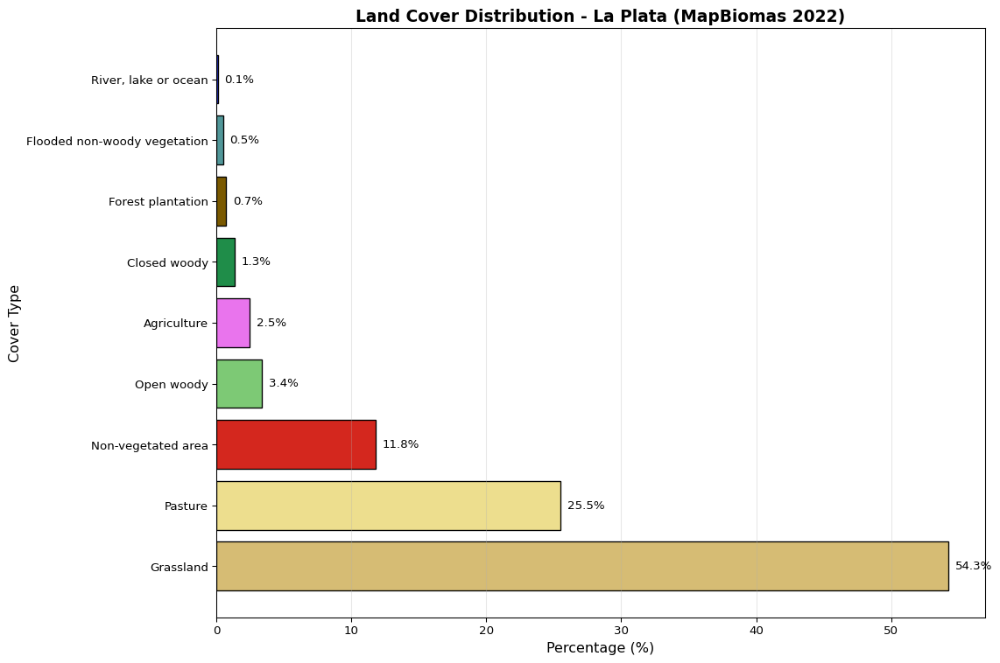
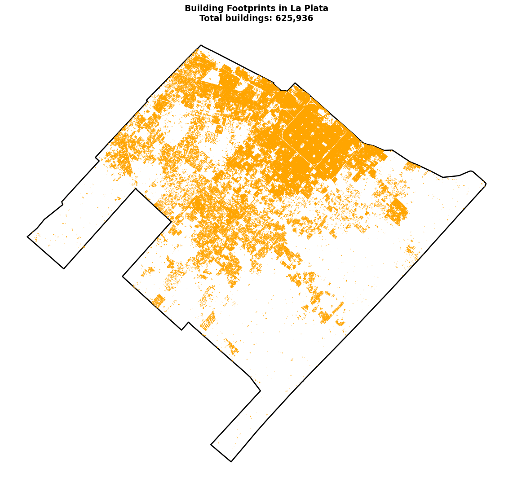

import geopandas as gpd
import matplotlib.pyplot as plt
import os
from owslib.wfs import WebFeatureService
from io import StringIO, BytesIO
partidos_path = "../../public/python-geoespacial/pba_partidos.parquet"
# Load partidos from ARBA GeoServer WFS service
if os.path.exists(partidos_path):
partidos = gpd.read_parquet(partidos_path)
else:
# Connect to WFS (Web Feature Service)
wfs_url = "https://geo.arba.gov.ar/geoserver/idera/wfs"
wfs = WebFeatureService(url=wfs_url, version="2.0.0")
# Request the Departamento layer (partidos)
response = wfs.getfeature(
typename="idera:Departamento",
srsname="EPSG:5347", # Original CRS
)
# Convert WFS response to GeoDataFrame
partidos = gpd.read_file(BytesIO(response.read()))
# Save to cache for future use
partidos.to_parquet(partidos_path)
# Reproject to working CRS
partidos = partidos.to_crs("EPSG:5348") # POSGAR 2007 / Argentina 4Geospatial Python
This lesson is largely based on material from Introduction to Geospatial Raster and Vector Data with Python by The Carpentries, available under a CC BY 4.0 license.
Objectives
This chapter develops basic GIS programming skills for working with open data on climate risk. You will learn about geospatial data types, projections, spatial operations, basic analysis, and visualization.
What is GIS?
GIS (Geographic Information System) is software that allows you to interact with geospatial data: capture, store, analyze, and visualize information about locations on the Earth’s surface. These tools are fundamental for understanding spatial patterns, making informed decisions about resources and territory, and communicating geographic information effectively.
In the context of climate risk management, GIS makes it possible to do things such as identify areas vulnerable to flooding, analyze urban temperature patterns, evaluate green infrastructure coverage, and much more. Common tools include desktop applications (ArcGIS, QGIS), spatial databases (PostGIS), processing libraries (GDAL), cloud platforms (Google Earth Engine), and programming languages (R and Python).
There are two main approaches for working with geospatial data:
- Graphical user interface (GUI) applications like ArcGIS and QGIS allow you to work with spatial data without learning a programming language. Mapping and visualization are more intuitive and flexible in this environment. However, these tools have important limitations: low reproducibility of analyses, limited scalability for automation, restricted capacity to customize functionality, and complex interfaces with too many buttons that can be overwhelming.
- On the other hand, programming offers high reproducibility, scalability, and complete automation. It provides total flexibility to customize functionality and facilitates integration with other workflows and data sources. The main disadvantages are the need to learn a programming language, a steeper learning curve at the beginning, and that mapping and visualization are less intuitive initially.
In this book, we use Python for all of our analyses. Python is widely used with a rich ecosystem of specialized libraries for geospatial analysis. It is flexible, powerful, and relatively easy to learn compared to other languages. It offers complete integration with databases, APIs, web services, and other programming languages. Additionally, it is free, open source, and has an active community that provides abundant documentation, tutorials, and support. Lastly, its high replicability makes it ideal for sharing analyses that can be adapted and scaled in other contexts.
Cloud-Native Geospatial
Cloud-native geospatial tools are designed specifically to work with data stored in the cloud. Unlike traditional tools that require downloading complete datasets, these tools allow you to access and process only the portions of data needed through protocols like HTTP range requests.
The cloud basically means someone else’s computer: servers that your device connects to over the internet. Cloud computing offers power, flexibility, and scalability as needed without requiring you to configure local servers. It provides distributed and reliable infrastructure. However, it has an initial learning curve, costs can accumulate with intensive use, and it requires constant internet connection.
Examples include Cloud Optimized GeoTIFF (COG) for raster data, which allows efficient streaming of satellite images without downloading complete files. GeoParquet and FlatGeobuf are cloud-optimized vector formats that support fast spatial queries. Platforms like Google Earth Engine, Microsoft Planetary Computer, and AWS Earth Search provide massive catalogs of satellite data with APIs for analysis at scale.
These tools are especially relevant for climate risk analysis, where we need to process large volumes of satellite, climate, and geographic data without the infrastructure to store them locally. The cloud-native tools we will use are not more difficult than traditional tools and offer many advantages. The cloud is simply one of the places where people compute today. As mentioned in the introduction, this book takes the cloud-native approach as the default.
Coordinate Reference Systems (CRS)
Coordinate reference systems define how the spatial elements of data relate to the Earth’s surface. CRS are geographic or projected. Geographic systems identify locations using longitude and latitude in decimal degrees on a spherical or ellipsoidal surface. Projected systems convert the three-dimensional surface of the Earth into Cartesian coordinates (x, y) in meters on an implicitly flat surface.

All projection introduces deformations. Therefore, some properties of the Earth’s surface are distorted: area, direction, distance, and shape. A projection can preserve only one or two of these properties. Projections are named according to the property they preserve: equal-area preserves area, azimuthal preserves direction, equidistant preserves distance, and conformal preserves local shape.
If you imagine that the Earth is an orange, the way you peel it and then flatten the skin is similar to how projections are made.

Tip
When problems arise with spatial analysis, the cause is often CRS-related issues. When troubleshooting, one of the first things you should check is whether there is a CRS problem.
Vector data
The vector data model represents geographic features with points, lines, and polygons. These geometries have discrete and well-defined boundaries, which means that vector data generally has high precision. Points can represent independent features (like the location of a bus stop) or they can connect to form more complex geometries like lines and polygons.

Vector data is organized into a table of attributes and geometries. The geometry column is essential in a GeoDataFrame: it contains the geometric part of the vector layer and is the basis for all spatial operations. This column can contain point, line, polygon, or multipolygon, and also stores spatial reference information (CRS).

Vectors dominate the social sciences because human settlements and processes (like transportation infrastructure) tend to have discrete boundaries.
Python libraries for vector data
GeoPandas extends Pandas to work with spatial geometries using Shapely for geometric operations and Fiona for file reading/writing. We also use Matplotlib for basic graphics and visualization.
Vector file formats
For cloud-native workflows, GeoParquet is a columnar format optimized for analytical queries of large vector datasets, and FlatGeobuf provides efficient spatial access through built-in spatial indexing. Both support HTTP range requests, meaning you can query subsets of data without downloading entire files.
You’ll also encounter GeoJSON (.geojson, .json), which is used for web mapping and stores coordinates as text using JavaScript Object Notation. GeoPackage (.gpkg) is a single-file format that works well for local data exchange. ESRI Shapefile (.shp, .dbf, .shx) is a legacy format that requires multiple files and has technical limitations (field name length, attribute types, file size), but you’ll still encounter it in the wild because many organizations haven’t migrated yet.
We load municipal boundaries for Buenos Aires Province from ARBA’s WFS service [@arba_partidos_pba]. The code below checks for a cached local copy first, then fetches from the WFS service if needed.
Reprojections
Transforming data from one coordinate system to another is frequently necessary when working with multiple data sources. All data must be in the same CRS before performing spatial analysis. In the code above, we reprojected the partidos data to EPSG:5348 (POSGAR 2007 / Argentina 4) using GeoPandas’ to_crs() method. This ensures our data is in a projected coordinate system with units in meters, which is appropriate for spatial calculations in the La Plata region.
Tip
When you have datasets in different coordinate systems, choose a projected CRS that covers your study area. For Argentina, POSGAR 2007 divides the country into 7 Gauss-Krueger zones. Use the zone that covers your municipality. If your study area spans multiple zones, choose the zone that covers the majority of your area. You can confirm CRS codes at epsg.io.
partidos.head()| gml_id | cca | cde | fna | gna | nam | sag | ara3 | arl | geometry | |
|---|---|---|---|---|---|---|---|---|---|---|
| 0 | Departamento.437 | 065 | 06505 | Partido de Magdalena | Partido | Magdalena | ARBA | 1849.53 | 1785.29 | MULTIPOLYGON (((6435320.257 6134850.321, 64352... |
| 1 | Departamento.434 | 090 | 06686 | Partido de Rojas | Partido | Rojas | ARBA | 2060.72 | 1978.87 | MULTIPOLYGON (((6128472.001 6214278.169, 61285... |
| 2 | Departamento.436 | 058 | 06455 | Partido de Las Flores | Partido | Las Flores | ARBA | 3341.36 | 3340.27 | MULTIPOLYGON (((6292198.682 5974257.073, 62916... |
| 3 | Departamento.485 | 031 | 06266 | Partido de Exaltación de la Cruz | Partido | Exaltación de la Cruz | ARBA | 636.36 | 634.17 | MULTIPOLYGON (((6286757.47 6218024.36, 6286781... |
| 4 | Departamento.435 | 046 | 06364 | Partido de General Rodríguez | Partido | General Rodríguez | ARBA | 365.40 | 360.14 | MULTIPOLYGON (((6327496.29 6167316.466, 632748... |
partidos.plot()
Filter and manipulate geometries
The partidos data has several attributes: department code, department name, and geometry. To extract only the data for the Partido de La Plata, we filter for the observation where the “fna” column corresponds to “Partido de La Plata”.
la_plata = partidos[partidos["fna"] == "Partido de La Plata"]
la_plata.head()| gml_id | cca | cde | fna | gna | nam | sag | ara3 | arl | geometry | |
|---|---|---|---|---|---|---|---|---|---|---|
| 11 | Departamento.496 | 055 | 06441 | Partido de La Plata | Partido | La Plata | ARBA | 892.63 | 942.23 | MULTIPOLYGON (((6395811.772 6128078.545, 63970... |
When we map it we see that it includes not only the urban area but also an island that is technically part of the partido.
la_plata.plot(figsize=(12, 12))
When we examine the geometry type, we see that we have a multipolygon. The geometry can be a point, a line, a polygon, or a multipolygon.
print(la_plata.geometry.iloc[0].geom_type)MultiPolygonWe want to remove the island because it does not correspond to our analysis. We extract the larger geometry of the two.
# Get the main geometry and keep only the largest polygon
la_plata = la_plata.copy()
main_geom = la_plata.geometry.iloc[0]
la_plata.loc[la_plata.index[0], "geometry"] = max(main_geom.geoms, key=lambda p: p.area)When we check the geometry again, we see that it is now a simple polygon and only the partido de La Plata appears without the island.
print(la_plata.geometry.iloc[0].geom_type)Polygonla_plata.plot(figsize=(12, 12))
The GeoDataFrame class extends the pandas DataFrame, allowing you to treat non-spatial attributes like a table and process them with standard methods. Spatial predicates are geometric relationships between objects: intersection, containment, proximity, etc. These operations are fundamental for analyses like identifying neighborhoods within flood zones or finding critical infrastructure near risk areas. For more details, see Geocomputation with Python, Chapter 1.
Raster data
The raster data model represents the world through a continuous grid of cells of constant size. This model consists of metadata (header) that defines the coordinate system, the origin, and the resolution, plus a matrix of values. The origin is typically the coordinate of the lower-left corner. This representation avoids explicitly storing the coordinates of each cell, making raster processing much more efficient than vector processing.

Cell values are numeric, representing continuous variables (elevation, temperature, precipitation) or categorical variables (land cover types, use classes). Rasters usually represent continuous phenomena, although discrete features like soil classes can also be represented in this model. However, the edges of discrete features can become blurry in raster datasets.
Continuous data refer to values that can take any number within a range (including decimals). These values are stored as floats (floating-point numbers) instead of integers, allowing you to represent precise measurements like 15.7 meters or 23.42 meters of elevation. Categorical data represents categories by encoding them as integers.
Rasters dominate many environmental sciences due to dependence on satellite remote sensing data. Examples include satellite images, aerial photographs, digital elevation models, and precipitation maps. In this chapter we use digital elevation models (continuous) and land cover data (categorical).
Python libraries for raster data
Rasterio reads and writes georeferenced raster formats. Xarray and rioxarray facilitate working with labeled multidimensional arrays, ideal for climate time series. GDAL/OGR are the fundamental libraries that underlie many tools.
Raster file formats
GeoTIFF (.tif, .tiff) is the industry standard format for GIS applications and satellite remote sensing. Cloud Optimized GeoTIFF (COG) is an optimized variant that incorporates tiles and previews to support HTTP queries, allowing you to load subsets of the image without transferring the complete file. For cloud-native workflows with multidimensional data, Zarr is a format optimized for cloud storage, ideal for climate time series.
We work with 30m resolution Digital Surface Model data from the Copernicus DEM [@copernicus_dem_openlandmap], accessed via the Element84 Earth Search STAC catalog. We use Cloud Optimized GeoTIFF along with the rioxarray module to import only the necessary data efficiently. Instead of importing all the global data (several terabytes), we import only our area of interest through lazy loading. This means we don’t download the data until we have filtered it, thus using only the essential memory and computational power.
import pystac_client
from odc.stac import load
import rioxarray as rio
# Reproject to geographic CRS for bounding box query
aoi = la_plata.to_crs("EPSG:4326")
# Configure AWS for unsigned requests (no login required)
os.environ["AWS_NO_SIGN_REQUEST"] = "YES"
os.environ["GDAL_DISABLE_READDIR_ON_OPEN"] = "EMPTY_DIR"
# Connect to Element84 Earth Search STAC catalog
catalog = pystac_client.Client.open("https://earth-search.aws.element84.com/v1")
# Get bounding box for our area of interest
# bbox format: [min_x, min_y, max_x, max_y]
bbox = aoi.total_bounds
# Search for Copernicus DEM tiles covering our area
# cop-dem-glo-30 is the global 30m elevation dataset
search = catalog.search(
collections=["cop-dem-glo-30"],
bbox=bbox,
)
# Get the items (files) that cover our area
items = list(search.items())
# Load DSM using chunks for efficient memory processing
# odc.stac.load automatically downloads and assembles the necessary tiles
dsm = load(
items,
bbox=bbox,
chunks={"x": 1024, "y": 1024}, # Process in blocks for efficiency
)
# Extract elevation band and convert to DataArray for use with rioxarray
# load() returns a Dataset; we need the elevation DataArray
dsm = dsm["data"].squeeze() # Remove extra dimensions
# Clip raster to exact geometries
dsm_clipped = dsm.rio.clip(aoi.geometry)
# Reproject clipped area to working CRS (POSGAR 2007 / Argentina 4)
# This is more efficient because we reproject only the area of interest
dsm_reproj = dsm_clipped.rio.reproject(dst_crs="EPSG:5348")We visualize the digital surface model for La Plata. The robust=True parameter improves contrast by ignoring extreme values, and cmap="terrain" uses an appropriate color palette for elevation.
dsm_reproj.plot(robust=True, cmap="terrain", figsize=(12, 12))
Zonal statistics: connecting raster and vector
Zonal statistics allow you to calculate aggregate values from a raster within zones defined by vector polygons. This operation is fundamental for connecting continuous data (raster) with administrative units (vector). We extract elevation statistics for the La Plata area.
import numpy as np
from rasterstats import zonal_stats
la_plata = la_plata.copy()
# Extract elevation statistics (min, mean, median, max)
stats = zonal_stats(
la_plata,
dsm_reproj.squeeze().values,
affine=dsm_reproj.rio.transform(),
stats=["min", "mean", "median", "max"],
nodata=np.nan,
)
# Add the statistics as new columns
la_plata["dsm_min"] = [s["min"] for s in stats]
la_plata["dsm_mean"] = [s["mean"] for s in stats]
la_plata["dsm_median"] = [s["median"] for s in stats]
la_plata["dsm_max"] = [s["max"] for s in stats]
la_plata[
[
"fna",
"dsm_min",
"dsm_mean",
"dsm_median",
"dsm_max",
]
]| fna | dsm_min | dsm_mean | dsm_median | dsm_max | |
|---|---|---|---|---|---|
| 11 | Partido de La Plata | -4.320292 | 19.391156 | 20.339926 | 52.470333 |
We import 30m resolution categorical land cover data from MapBiomas Argentina Collection 1 [@mapbiomas_argentina_2022], covering 1998-2022. This is the most reliable land cover data currently available for Argentina. The dataset is accessed directly from MapBiomas’ public Google Cloud Storage bucket without requiring a local copy, since we clip to our area of interest before downloading.
suelo_2022_ruta = "https://storage.googleapis.com/mapbiomas-public/initiatives/argentina/collection-1/coverage/argentina_coverage_2022.tif"
# Open the raster with rioxarray and chunks
suelo_2022 = rio.open_rasterio(
suelo_2022_ruta,
chunks={"x": 4096, "y": 4096},
)
# Clip in the raster's native CRS (EPSG:4326)
suelo_2022_clipped = suelo_2022.rio.clip(
aoi.geometry.values,
from_disk=True,
)
# Reproject to working CRS (POSGAR 2007 / Argentina 4)
suelo_2022 = suelo_2022_clipped.rio.reproject(dst_crs="EPSG:5348")
# Mask NoData values
suelo_2022_masked = suelo_2022.where(
(suelo_2022 != suelo_2022.rio.nodata) & (suelo_2022 != 255)
)Spatial clipping
Extracting data within a specific area of interest is one of the most common spatial operations. In the code above, we clipped the national land cover data to the boundaries of La Plata using the .rio.clip() method. This operation reduces the dataset from the entire country to just our study area, making subsequent processing faster and more focused. Note that we clip in the raster’s native CRS (EPSG:4326) before reprojecting to our working CRS (EPSG:5348).
Show legend and formatting code
import matplotlib.colors as mcolors
# Define land cover categories with their IDs and MapBiomas colors
categories = {
"Closed woody": {"ids": [3], "color": "#1f8d49"},
"Open woody": {"ids": [4], "color": "#7dc975"},
"Sparse woody": {"ids": [45], "color": "#807a40"},
"Flooded woody": {"ids": [6], "color": "#026975"},
"Flooded non-woody vegetation": {"ids": [11], "color": "#519799"},
"Grassland": {"ids": [12], "color": "#d6bc74"},
"Steppe": {"ids": [63], "color": "#ebf8b5"},
"Pasture": {"ids": [15], "color": "#edde8e"},
"Agriculture": {"ids": [18], "color": "#e974ed"},
"Forest plantation": {"ids": [9], "color": "#7a5900"},
"Shrub crop": {"ids": [36], "color": "#d082de"},
"Agricultural mosaic": {"ids": [21], "color": "#ffefc3"},
"Non-vegetated area": {"ids": [22], "color": "#d4271e"},
"River, lake or ocean": {"ids": [33], "color": "#2532e4"},
"Ice and surface snow": {"ids": [34], "color": "#93dfe6"},
"Not observed": {"ids": [27], "color": "#ffffff"},
}
# Get the unique IDs present in the data
unique_values = np.unique(
suelo_2022_masked.values[~np.isnan(suelo_2022_masked.values)]
).astype(int)
present_ids = set(unique_values)
# Filter only the categories that appear in our data
present_categories = {
name: info
for name, info in categories.items()
if any(id in present_ids for id in info["ids"])
}
# Create color map
colors_by_id = {}
for info in categories.values():
for pixel_id in info["ids"]:
colors_by_id[pixel_id] = info["color"]
sorted_ids = sorted(colors_by_id.keys())
cmap = mcolors.ListedColormap([colors_by_id[i] for i in sorted_ids])
norm = mcolors.BoundaryNorm(sorted_ids, cmap.N)
# Visualize the land cover raster
fig, ax = plt.subplots(figsize=(20, 20))
suelo_2022_masked.plot(ax=ax, cmap=cmap, norm=norm, add_colorbar=False)
# Create legend only with the present categories
legend = [
plt.Rectangle((0, 0), 1, 1, facecolor=info["color"], label=name)
for name, info in present_categories.items()
]
ax.legend(
handles=legend,
loc="lower center",
bbox_to_anchor=(0.5, -0.1),
ncol=3,
frameon=False,
)
plt.title("Land Cover - MapBiomas 2022")
plt.tight_layout()
plt.show()
Analyze territorial distribution
To better understand the composition of the territory, we calculate what percentage of the La Plata area corresponds to each type of land cover.
# Extract raster values and remove NoData
values = suelo_2022_masked.values.flatten()
values = values[~np.isnan(values)]
# Count pixels of each unique ID
unique_ids, counts = np.unique(values, return_counts=True)
# Group IDs by coverage category
counts_by_category = {}
for name, info in categories.items():
total = sum(
counts[unique_ids == pixel_id][0] if pixel_id in unique_ids else 0
for pixel_id in info["ids"]
)
if total > 0:
counts_by_category[name] = {"count": total, "color": info["color"]}
# Calculate percentages
total_pixels = sum(cat["count"] for cat in counts_by_category.values())
for name in counts_by_category:
percentage = (counts_by_category[name]["count"] / total_pixels) * 100
counts_by_category[name]["percentage"] = percentage
# Sort from highest to lowest percentage
sorted_categories = sorted(
counts_by_category.items(), key=lambda x: x[1]["percentage"], reverse=True
)Show chart formatting code
# Create horizontal bar chart
fig, ax = plt.subplots(figsize=(12, 8))
names = [cat[0] for cat in sorted_categories]
percentages = [cat[1]["percentage"] for cat in sorted_categories]
colors = [cat[1]["color"] for cat in sorted_categories]
bars = ax.barh(names, percentages, color=colors, edgecolor="black")
ax.set_xlabel("Percentage (%)", fontsize=12)
ax.set_ylabel("Cover Type", fontsize=12)
ax.set_title(
"Land Cover Distribution - La Plata (MapBiomas 2022)",
fontsize=14,
fontweight="bold",
)
ax.grid(True, alpha=0.3, axis="x")
# Add percentage labels on the bars
for bar, pct in zip(bars, percentages):
ax.text(
pct + 0.5,
bar.get_y() + bar.get_height() / 2,
f"{pct:.1f}%",
va="center",
fontsize=10,
)
plt.tight_layout()
plt.show()
Spatial aggregation
Spatial aggregation combines multiple geometries or calculates summary statistics within geographic areas. We demonstrate this by counting building footprints within La Plata using cloud-native building data from the Google-Microsoft-OSM Open Buildings dataset [@google_microsoft_osm_buildings].
import duckdb
import pandas as pd
# Get bounding box of La Plata in WGS84 (EPSG:4326) for cloud query
bounds_4326 = la_plata.to_crs("EPSG:4326").total_bounds
# Configure DuckDB with spatial and network extensions
con = duckdb.connect()
con.execute("INSTALL spatial")
con.execute("LOAD spatial")
con.execute("INSTALL httpfs")
con.execute("LOAD httpfs")
# Configure DuckDB for S3 cloud storage access
con.execute("SET s3_region='us-east-1'")
con.execute("SET s3_endpoint='data.source.coop'")
con.execute("SET s3_use_ssl=true")
con.execute("SET s3_url_style='path'")
# Query buildings within our bounding box and save to temporary file
# This filters buildings using geographic bounds (bbox) to load only those in our area of interest
temp_file = "buildings_filtered.parquet"
query = f"""
COPY (
SELECT *
FROM 's3://vida/google-microsoft-open-buildings/geoparquet/by_country/country_iso=ARG/ARG.parquet'
WHERE bbox.xmax >= {bounds_4326[0]} AND bbox.xmin <= {bounds_4326[2]} AND
bbox.ymax >= {bounds_4326[1]} AND bbox.ymin <= {bounds_4326[3]}
) TO '{temp_file}' (FORMAT PARQUET);
"""
con.execute(query)
# Read filtered building data from Parquet file
buildings_df = pd.read_parquet(temp_file)
# Deserialize geometries: convert from binary format (WKB - Well-Known Binary) to GeoSeries objects
# GeoParquet stores geometries as bytes in WKB format, we need to convert them to GeoPandas geometries
buildings_df["geometry"] = gpd.GeoSeries.from_wkb(buildings_df["geometry"])
# Create GeoDataFrame with deserialized geometries
# Specify original CRS as EPSG:4326 (WGS84) since data comes in that coordinate system
buildings = gpd.GeoDataFrame(buildings_df, geometry="geometry", crs="EPSG:4326")
# Reproject to working CRS to match other analysis data
buildings = buildings.to_crs("EPSG:5348")Now we spatially filter buildings that fall within La Plata’s boundaries and count them:
# Spatial join: keep only buildings that intersect with La Plata polygon
buildings_in_la_plata = gpd.sjoin(buildings, la_plata, predicate="intersects", how="inner")
# Count total buildings
total_buildings = len(buildings_in_la_plata)
print(f"Total buildings in La Plata: {total_buildings:,}")Total buildings in La Plata: 625,936Show map visualization code
# Visualize buildings within La Plata
fig, ax = plt.subplots(figsize=(12, 12))
# Plot La Plata boundary
la_plata.plot(ax=ax, facecolor="none", edgecolor="black", linewidth=2)
# Plot buildings with orange outlines
buildings_in_la_plata.plot(ax=ax, facecolor="none", edgecolor="orange", linewidth=0.5)
ax.set_title(f"Building Footprints in La Plata\nTotal buildings: {total_buildings:,}",
fontsize=14, fontweight="bold")
ax.set_xticks([])
ax.set_yticks([])
ax.spines["top"].set_visible(False)
ax.spines["right"].set_visible(False)
ax.spines["bottom"].set_visible(False)
ax.spines["left"].set_visible(False)
plt.tight_layout()
plt.show()
Other Common Spatial Operations
Throughout this chapter, we’ve demonstrated several fundamental spatial operations: reprojections (converting between coordinate systems), spatial clipping (extracting data for a specific area), zonal statistics (summarizing raster values within vector polygons), and spatial aggregation (combining geometries by attributes). These operations form the core of most climate risk workflows.
Other common spatial operations you’ll encounter in geospatial analysis include spatial overlays (combining multiple data layers based on spatial relationships) and buffers (creating zones around features for proximity analysis). These operations are covered in detail in the resources below and will appear in later chapters when we apply them to specific climate risk problems.
Additional Resources
To deepen your knowledge of geospatial analysis with Python, consult these complete and free resources:
Rey, S., Arribas-Bel, D., & Wolf, L. (2023). Geographic Data Science with Python. CRC Press.
Dorman, M., Graser, A., Nowosad, J., & Lovelace, R. (2025). Geocomputation with Python. CRC Press.
To explore traditional GIS software and commercial platforms, visit The Carpentries Geospatial Python workshop which includes detailed information about open source options (QGIS, GRASS GIS, GDAL) and commercial solutions (ArcGIS, MapInfo).